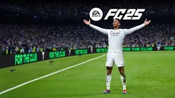

Juegos de accion y aventura
FIFA 25
¡Lleva el fútbol a otro nivel! Este juego te ofrece una experiencia más realista que nunca, con modos como el nuevo Rush 5v5, mejoras tácticas con FC IQ y la posibilidad de jugar con más de 19,000 futbolistas y 700 equipos de todo el mundo. Desde la UEFA Champions League hasta las ligas femeninas más importantes, este título tiene algo para todos los fanáticos del fútbol. ¡Es hora de demostrar tus habilidades en el campo virtual!
NBA 2K25

¡Lleva el baloncesto a otro nivel! Este juego ofrece una experiencia increíblemente realista con gráficos mejorados y nuevas mecánicas de juego gracias a la tecnología ProPLAY™. Disfruta de modos como MyCAREER, MyTEAM y MyNBA, además de explorar una vibrante ciudad llena de oportunidades. ¡Conviértete en una leyenda de la NBA y domina cada cancha!